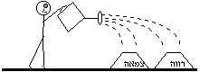

קוד: ביאור:דברים כט18 בתנ"ך
סוג: משל
מאת: ע"פ אברבנאל
אל: שיעור נח"ת חיפה נ"ג
[ע"פ אברבנאל]
לאחר שאמר משה לבני-ישראל את הברכות שיבואו עליהם אם יקיימו את
התורה, ואת הקללות שיבואו עליהם אם לא יקיימו את התורה, הוא קרא להם שוב
ואמר להם (דברים כט9): "אתם ניצבים היום כולכם לפני ה' אלהיכם: ראשיכם
שבטיכם זקניכם ושוטריכם, כל איש ישראל; טפכם נשיכם וגרך אשר בקרב
מחניך מחוטב עציך עד שואב מימיך. לעוברך בברית ה' אלוהיך ובאלתו אשר
ה' אלוהיך כורת עימך היום. למען הקים אותך היום לו לעם, והוא יהיה לך
לאלוהים, כאשר דיבר לך; וכאשר נשבע לאבותיך, לאברהם ליצחק וליעקב. ולא
אתכם לבדכם אנוכי כורת את הברית הזאת ואת האלה הזאת, כי את אשר ישנו פה
עמנו עומד היום לפני ה' אלוהינו, ואת אשר איננו פה עימנו היום. כי אתם
ידעתם את אשר ישבנו בארץ מצרים, ואת אשר עברנו בקרב הגויים אשר עברתם.
ותראו את שיקוציהם ואת גילוליהם - עץ ואבן, כסף וזהב אשר עמהם. פן יש בכם
איש או אישה או משפחה או שבט, אשר לבבו פונה היום מעם ה' אלוהינו, ללכת
לעבוד את אלוהי הגויים ההם; פן יש בכם שורש פורה ראש ולענה. והיה בשומעו
את דברי האלה הזאת, והתברך בלבבו לאמור 'שלום יהיה לי - כי בשרירות ליבי
אלך;
למען ספות הרווה את הצמאה'.
לא יאבה ה' סלוח לו - כי אז יעשן אף ה' וקנאתו באיש ההוא, ורבצה בו
כל האלה הכתובה בספר הזה; ומחה ה' את שמו מתחת השמים. והבדילו ה' לרעה מכל
שבטי ישראל - ככל אלות הברית הכתובה בספר התורה הזה. ואמר הדור האחרון,
בניכם אשר יקומו מאחריכם והנוכרי אשר יבוא מארץ רחוקה; וראו את מכות הארץ
ההיא ואת תחלואיה, אשר חילה ה' בה (גפרית ומלח, שריפה כל ארצה - לא תיזרע
ולא תצמיח, ולא יעלה בה כל עשב: כמהפכת סדום ועמורה, אדמה וצבויים, אשר
הפך ה' באפו ובחמתו. ואמרו כל הגויים: 'על מה עשה ה' ככה לארץ הזאת?; מה
חורי האף הגדול הזה?'. ואמרו 'על אשר עזבו את ברית ה' אלוהי אבותם, אשר
כרת עימם בהוציאו אותם מארץ מצרים. וילכו, ויעבדו אלוהים אחרים, וישתחוו
להם: אלוהים אשר לא ידעום, ולא חלק להם. וייחר אף ה' בארץ ההיא, להביא
עליה את כל הקללה הכתובה בספר הזה. וייתשם ה' מעל אדמתם, באף ובחמה ובקצף
גדול; וישליכם אל ארץ אחרת, כיום הזה. הנסתרות לה' אלוהינו; והנגלות לנו
ולבנינו, עד עולם - לעשות את כל דברי התורה הזאת.
"
הביטוי המרכזי בקטע הוא הביטוי "למען ספות הרווה את הצמאה
". יש פירושים שונים לביטוי הזה. ע"פ אברבנאל, הביטוי הוא משל מתחום החקלאות:

לגנן יש הרבה ערוגות; בכל ערוגה יש צמחים מסוג אחר. יש צמחים שצורכים יותר מים ונעשים צמאים יותר מהר, בעוד שצמחים אחרים צורכים פחות מים ונשארים רווים (רווה = ההפך מצמא). כשהגנן בא להשקות את הגינה, הוא לא מבחין בין הערוגות, אלא אם רוב הערוגות צמאות הוא משקה את כל הערוגות - גם את הרוות; הוא מוסיף את הערוגה הרווה על הערוגה הצמאה ומשקה את שתיהן.
בנמשל, הגנן הוא ה', המים הם ברכותיו של ה', והערוגות הן בני-ישראל.
הברכות והקללות שנזכרו בדברים כח מובטחות לכלל עם ישראל, ולא ליחידים: אם העם ילך לפי חוקי התורה הוא יזכה לברכות, ואם יעבור על חוקי התורה - הוא יסבול מהקללות. איש או אישה ששמע את הברכות והקללות, והיה בשומעו את דברי האלה הזאת, עלול ל והתברך בלבבו לאמור 'שלום יהיה לי - כי בשרירות ליבי אלך - מה הטעם להתאמץ ולקיים את התורה? אני אעשה מה שאני רוצה, ומכיוון שרוב עם ישראל יקיימו את התורה - ה' ייתן את הברכות לכולם, וגם לי יחד אתם: למען ספות הרווה את הצמאה.
אדם כזה, כמובן, לא יחטא בגלוי, כי אם באמת כלל עם ישראל מקיים את התורה - בוודאי יתפסו אותו, ישפטו אותו ויענישו אותו כדין. ולכן מודגש שהכוונה ל" פן יש בכם איש או אישה או משפחה או שבט, אשר לבבו פונה היום מעם ה' אלוהינו, ללכת לעבוד את אלוהי הגויים ההם; פן יש בכם שורש פורה ראש ולענה. "
השורש הוא מתחת לפני הקרקע, הוא נסתר - אבל אם השורש שותה רעל (ראש ולענה) הרעל יגיע בסופו של דבר לכל העץ ויהרוס אותו.
ה' רוצה להגן על עם ישראל, ולכן מבטיח להם שאם יהיה שורש כזה - לא יאבה ה' סלוח לו - כי אז יעשן אף ה' וקנאתו באיש ההוא, ורבצה בו כל האלה הכתובה בספר הזה; ומחה ה' את שמו מתחת השמים. והבדילו ה' לרעה מכל שבטי ישראל - ככל אלות הברית הכתובה בספר התורה הזה.
בסוף הקטע מודגש, שההבטחה הזאת תתקיים רק בתנאי שבני-ישראל יעשו את חובתם: הנסתרות לה' אלוהינו; והנגלות לנו ולבנינו, עד עולם - לעשות את כל דברי התורה הזאת: התפקיד שלנו ושל בנינו, עד עולם, הוא לעשות את כל דברי התורה הזאת, ובין השאר - לדאוג להעניש את החוטאים בגלוי. ה', מצידו, ידאג להעניש את החוטאים בסתר.
להסבר נוסף בנושא זה ע' במאמר הברכה הראשונה.